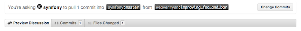

La documentación es tan importante como el código. Esta sigue exactamente los mismos principios: una vez y sólo una, pruebas, facilidad de mantenimiento, extensibilidad, optimización y reconstrucción sólo por nombrar algunos. Y, por supuesto, la documentación tiene errores, errores tipográficos, guías difíciles de leer y mucho más.
Antes de colaborar, necesitas familiarizarte con: el lenguaje de marcado empleado en la documentación.
La documentación Symfony2 se encuentra alojada en GitHub:
https://github.com/symfony/symfony-docs
Si deseas enviar un parche bifurcado al repositorio oficial en GitHub y luego reproducir tu bifurcación:
$ git clone git://github.com/TUNOMBRE/symfony-docs.git
A continuación, crea una rama dedicada a tus cambios (para mantener la organización):
$ git checkout -b mejorando_foo_y_bar
Ahora puedes hacer los cambios directamente en esta rama y consignarlos ahí. Cuando hayas terminado, impulsa esta rama a tu GitHub e inicia una petición de atracción. La petición de atracción debe ser entre tu rama mejorando_foo_y_bar y la rama maestra de Symfony-docs.
GitHub aborda el tema de las peticiones de atracción en detalle.
Note
La documentación de Symfony2 está bajo una licencia Creative Commons Attribution-Share Alike 3.0 Unported Licencia.
La contribución más fácil que puedes hacer es informar algún problema: un error, un error gramatical, un error en el código de ejemplo, una explicación omitida, y así sucesivamente.
Pasos a seguir:
Lee el documento dedicado.